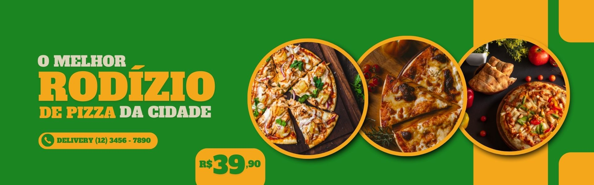

A Pizzaria Forno de Minas foi fundada em 1998 por um grupo de amigos apaixonados por gastronomia. Eles tinham o objetivo de criar uma pizzaria que oferecesse não apenas pizzas deliciosas, mas também um ambiente aconchegante e acolhedor, inspirado na cultura mineira. Desde o início, a Pizzaria Forno de Minas se destacou pela qualidade dos ingredientes e pelo cuidado no preparo das pizzas. Todos os dias, a equipe de pizzaiolos trabalha com ingredientes frescos e selecionados, preparando as pizzas artesanalmente em um forno à lenha, seguindo receitas tradicionais da culinária mineira. Além disso, a Pizzaria Forno de Minas tem um forte compromisso com a comunidade e com o meio ambiente. A empresa utiliza apenas ingredientes de fornecedores locais e orgânicos sempre que possível, e busca reduzir ao máximo o impacto ambiental de suas atividades. Na cultura da Pizzaria Forno de Minas, a hospitalidade e o respeito são valores fundamentais. A equipe de atendimento recebe os clientes com um sorriso no rosto e se esforça para garantir uma experiência única e memorável a cada visita. Além disso, a pizzaria promove a cultura e as tradições mineiras por meio de eventos e parcerias com artistas locais. A Pizzaria Forno de Minas é muito mais do que uma simples pizzaria: é um local onde as pessoas se encontram para desfrutar de uma comida de qualidade, em um ambiente acolhedor e com um atendimento de excelência. A empresa se orgulha de sua história e cultura, e está sempre buscando formas de inovar e melhorar para continuar oferecendo a melhor experiência possível aos seus clientes.

